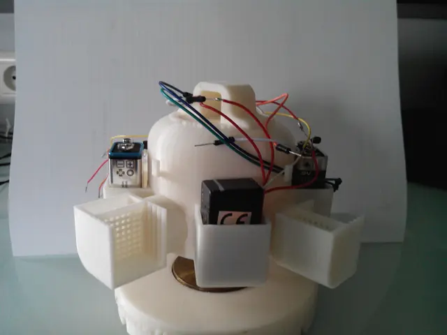
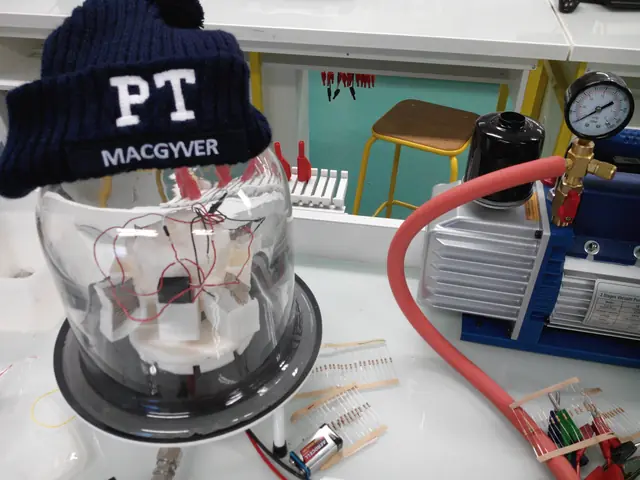
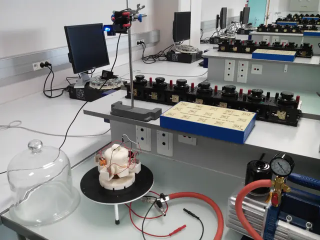

TIPE de classe préparatoire · 2014 — 2016
Propulseur ionique
Concevoir, imprimer en 3D et mesurer un propulseur électrostatique à grille pour nanosatellite — sous une cloche à vide de lycée.
- poussée mesurée
- 6,7 µN
- tension
- 22 kV
- impulsion spécifique
- 36 000 s
Le principe en une phrase
Dans l'espace, rien ne freine.
Un propulseur ionique arrache des particules chargées à un ergol, les accélère dans un champ électrique intense et les éjecte à des centaines de kilomètres par seconde. Par action-réaction, le satellite avance.
La poussée est infime — de l'ordre du micronewton — mais elle peut durer des mois, voire des années.
Pourquoi un CubeSat
Des satellites de la taille d'une brique de lait.
Grâce à la miniaturisation, des nanosatellites de 10 cm de côté accomplissent aujourd'hui des missions réservées autrefois à des engins de plusieurs tonnes. Ils ont besoin d'une propulsion compacte et sobre en ergol : c'est tout l'objet de ce projet.
Principe · 01
Un propulseur électrostatique à grille
Mon projet s'inspire des micropropulseurs du MIT : ni pompe, ni réservoir sous pression. L'ergol monte seul jusqu'aux grilles par capillarité.
Ergol : eau salée gélifiée — ions Na⁺ et Cl⁻
Principe · 02
Le gel ionique
Chaque alvéole contient de l'eau salée piégée dans du polyacrylate de sodium. Le gel ne bout pas sous vide et laisse suinter la solution jusqu'à l'aiguille.
Principe · 03
Le ménisque et le cône de Taylor
Au bout de l'aiguille, le champ électrique étire le ménisque en un cône pointu. À sa pointe, le champ devient si intense qu'il arrache les ions un à un.
Principe · 04
Grille d'extraction, grille d'accélération
La grille d'accélération passe alternativement à +22 kV et −22 kV. Les ions Cl⁻ puis Na⁺ sont tour à tour éjectés : le satellite reste électriquement neutre.
Principe · 05 — Simulation interactive
Action, réaction
L'énergie électrique devient énergie cinétique : ve = √(2qV/m). Plus les ions sont rapides, moins on consomme d'ergol pour une même poussée.
* Poussée idéale F = 2P/ve (rendement de 100 %). Les moteurs du commerce accélèrent du xénon sous 1 à 2 kV : moins de vitesse, mais bien plus de poussée par watt.
Le projet
Un TIPE, deux ans,
une cloche à vide.
Les TIPE — travaux d'initiative personnelle encadrés — constituent l'épreuve de projet des concours d'écoles d'ingénieurs. Le mien a commencé à l'automne 2014 au lycée La Martinière Monplaisir, à Lyon, avec une question simple : peut-on construire, avec les moyens d'un laboratoire de lycée, un propulseur ionique qui pousse vraiment ?
Ce site reprend le journal que je tenais alors en ligne, pour partager mes résultats, garder la trace de chaque expérience et recevoir les conseils d'internautes avisés. Les modèles 3D sont ceux que j'avais dessinés sous SolidWorks, et les courbes sont tracées à partir de mes relevés d'origine.



Le prototype · 01
Dessiné sous SolidWorks, imprimé couche par couche
Le propulseur #2.1 est une seule pièce de 160 mm d'envergure et 84 mm de haut. C'est le modèle original, chargé ici depuis mes fichiers de 2015.
Le prototype · 02
Anatomie
Au bout de chacun des quatre bras, une unité de propulsion : le gel ionique et ses grilles. Entre eux, les logements des piles 9 V et des élévateurs de tension. Tout est embarqué.
Le prototype · 03
Vue éclatée
La structure, un verre de montre logé sous le dôme, une aiguille plantée dans une masse en laiton, et le socle qui dévie le flux d'air de la pompe.
Le prototype · 04
Un pivot de radiomètre
La structure repose par son verre de montre sur la pointe de l'aiguille, comme les ailettes d'un radiomètre de Crookes. Le centre de gravité, placé sous le point de contact, assure l'équilibre.
Le prototype · 05
Allumage
Les quatre unités poussent tangentiellement, toutes dans le même sens. La structure se met à tourner — très, très lentement.
Le prototype · 06
Sous la cloche à vide
Pour s'affranchir des frottements de l'air et laisser les ions filer, tout se passe sous une cloche reliée à une pompe à palettes : quelques millibars seulement.
Le prototype · 07 — La mesure
Avec ou sans propulseurs
La poussée est trop faible pour vaincre le frottement statique : je lance donc la structure, puis je compare sa décélération propulseurs éteints et allumés. Relevés d'origine, tour par tour :
Journal des expériences
Dix expériences,
deux impressions 3D.
De mars 2015 à mars 2016, chaque étape a commencé par une question, et parfois par un échec. Les données sont celles relevées à l'époque.
Résultats
Le poids d'un quart
de moustique.
6,7 µN, c'est le poids d'une masse de 0,7 mg. Minuscule sur Terre ; mais dans l'espace, sans rien pour freiner, une telle poussée finit par compter.
Impulsion spécifique
Combien de temps un kilogramme d'ergol peut-il produire une poussée égale à son propre poids ?
L'impulsion spécifique mesure l'efficacité d'un moteur : plus elle est grande, moins il consomme. La valeur théorique de mon propulseur est spectaculaire, parce que ses ions sont accélérés sous une tension très élevée — au prix d'une poussée par watt bien plus faible.
Note de 2026. Dans mon modèle, j'avais écrit P = F·ve. La puissance d'un jet vaut en réalité ½·F·ve : la poussée théorique serait de 22 µN plutôt que 11 µN, et le rendement estimé de mon prototype d'environ 30 % plutôt que 60 %.
La propulsion ionique dans l'espace · 01
Deux façons de monter en orbite
Pour passer d'une orbite basse à une orbite haute, un moteur chimique délivre deux impulsions brèves et puissantes. Un moteur ionique pousse doucement, sans jamais s'arrêter.
02 · Chimique
Le transfert de Hohmann
Une poussée au périgée, une demi-ellipse, une seconde poussée à l'apogée : quelques heures suffisent. Mais l'ergol, éjecté à 3 km/s à peine, représente l'essentiel de la masse au départ.
03 · Ionique
La spirale
Une poussée minuscule mais continue : le satellite s'éloigne tour après tour, pendant des semaines ou des mois. Ses ions filant dix fois plus vite, il emporte, pour une même charge utile, plus de quinze fois moins d'ergol.
04 · Équation de Tsiolkovski
Ce qu'il faut emporter
Part de la masse au départ occupée par l'ergol, pour un même gain de vitesse de 4 km/s :
Isp = 320 s
Isp = 3 000 s
Ils volent déjà
De Deep Space 1
aux constellations.
Apparue en 1998 comme propulsion principale d'une sonde, la propulsion électrique équipe aujourd'hui des milliers de satellites. En 2016, je concluais ma soutenance sur ses missions envisageables ; dix ans plus tard, elles sont devenues réalité.
L'inspiration
Les micropropulseurs du MIT
Mon banc de test reprenait l'idée du laboratoire de propulsion spatiale du MIT : des propulseurs électrospray à liquide ionique montés sur une structure en rotation, dont on observe la vitesse. Le leur flottait par sustentation magnétique ; le mien reposait sur une aiguille.

Propulseurs iEPS du MIT en rotation · vidéo de F. Mier-Hicks
29 juin 2016 · IUT Paris Descartes
Dix minutes
pour deux ans.
L'oral du concours Banque PT : 10 minutes de présentation, 10 minutes de questions. Le jury avait lu ma fiche synoptique juste avant mon entrée. Mon exposé a duré 9 min 53 s.
Fiche synoptique · extrait
« Le modèle économique de l'exploration spatiale est en pleine mutation. Les réductions budgétaires ont favorisé l'avènement de technologies plus économes. Grâce à la miniaturisation généralisée des technologies, les nanosatellites CubeSat sont à même d'accomplir les missions de leurs ancêtres de plus grande taille. »
Objectif : concevoir et étudier un modèle de propulseur ionique adapté aux besoins d'un CubeSat.
Bilan
Ce TIPE m'a fait entrevoir les difficultés qui entourent l'analyse des résultats d'une expérience, et l'importance de toujours confronter une étude pratique à un modèle théorique. Il a surtout nourri mon intérêt pour la propulsion spatiale et mon goût pour la recherche.
À la rentrée 2016, je rejoignais l'École Centrale de Nantes.
Merci
À celles et ceux qui m'ont aidé
- Gregory Emsellem, fondateur et dirigeant de The Elwing Company
- Nicolas Arcis, chef du service propulsion et pyrotechnie pour les satellites au CNES
- François Terrillon
- M. Gamelon, Mme Lechuga, Mme C. Aynié et toute l'équipe du laboratoire de physique de La Martinière Monplaisir
Sources
- MIT Space Propulsion Laboratory, Massachusetts
- Science Museum, Londres
- CNES Mag n° 63, octobre 2014, article de Nicolas Arcis
- Wikipédia : multiplicateur de tension, radiomètre de Crookes